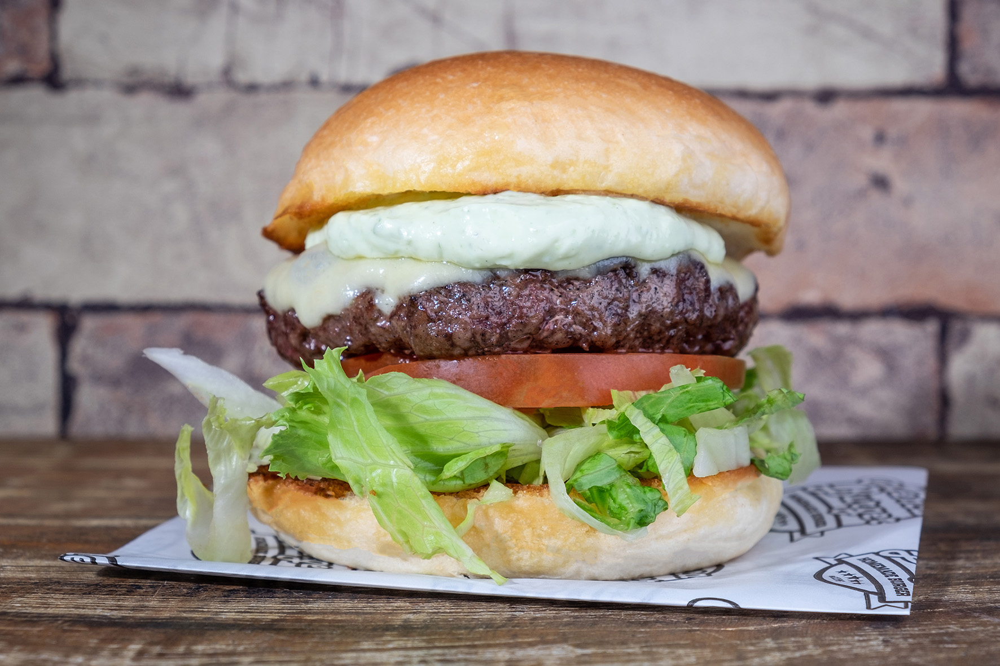
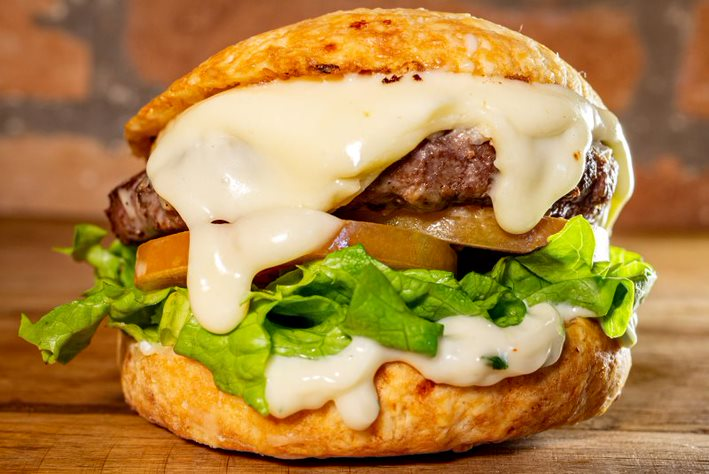

Hambúrguer caseiro!
Ingredientes:
- Pao
- Mussarela
- Presunto
- Cebola
- Tomate
- 1kilo de carne moida de sua preferencia
- alface
- Molhos adicionais de sua preferencia
Ingredientes (8 porções)
- 1 sachê de creme de cebola
- 4 dentes de alho picado
- sal a gosto
- pimenta a gosto
- orégano a gosto
- cebolinha a gosto
- 1 cebola media picada
- 1 kg de carne moída (de preferência patinho)
Utensílios
- Frigideira
- Espatula
- Faca
- Tigela
Informações adicionais
Dicas para preparar a melhor receita de hambúguer artesanal
Hambúrguer é uma coisa tão boa que tem um dia no ano só para ele. Todo 28 de maio se comemora o Dia Internacional do Hambúrguer e, agora que você sabe como fazer hambúrguer de carne moída.
A parte mais importante, logicamente, é a carne. Não é qualquer carne moída que faz um bom hambúrguer caseiro,
mas a boa notícia é que você não precisa recorrer a cortes caros como a picanha ou
o filé mignon para um hambúrguer artesanal gostoso. Acém e peito são carnes boas e baratas que criam hambúrgueres saborosos.
Também dá pra fazer hambúrguer com patinho, alcatra, coxão duro e fraldinha.Se você puder misturar as duas, melhor ainda.
Modo de Preparo
30min
- Misture todos os ingredientes, amasse bem e forme bolinhas, depois achate para ter a forma de hambúrguer.
- Frite numa frigideira antiaderente, coloque uma colher de óleo pois a carne não tem gordura.

